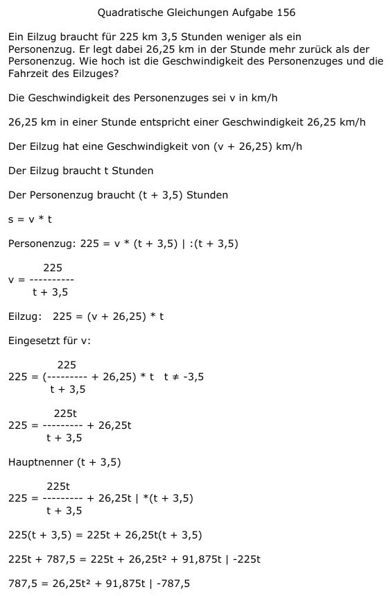

Aufgabe 156 Ein Eilzug braucht für 225 km 3,5 Stunden weniger als ein Personenzug. Er legt dabei 26,25 km in der Stunde mehr zurück als der Personenzug. Wie hoch ist die Geschwindigkeit des Personenzuges und die Fahrzeit des Eilzuges? Die Geschwindigkeit des Personenzuges sei v in km/h 26,25 km in einer Stunde entspricht einer Geschwindigkeit von 26,25 km/h Der Eilzug hat eine Geschwindigkeit von (v + 26,25) km/h Der Eilzug braucht t Stunden Der Personenzug braucht (t + 3,5) Stunden s = v * t Personenzug: 225 = v * (t + 3,5) |:(t + 3,5) 225 v = --------- t + 3,5 Eilzug: 225 = (v + 26,25) * t Eingesetzt für v: 225 225 = (--------- + 26,25) * t t ≠ -3,5 t + 3,5 225t 225 = --------- + 26,25t t + 3,5 Hauptnenner (t + 3,5) 225t 225 = -------- + 26,25t |*(t + 3,5) t + 3,5 225(t + 3,5) = 225t + 26,25t(t + 3,5) 225t + 787,5 = 225t + 26,25t2 + 91,875t |-225t 787,5 = 26,25t2 + 91,875t | -787,5 26,25t2 + 91,875t - 787,5 = 0 |:26,25 t2 + 3,5t - 30 = 0 p, q - Formel p = 3,5 ; q = -30  t1,2 = -1,75 ± 5,75 t1 = -1,75 + 5,75 = 4 h braucht der Eilzug t2 = -1,75 - 5,75 = -7,5 keine Lösung, negative Zeit Der Personenzug hat eine Geschwindigkeit von 225 km 225 km v = ------------- = ----------- = 30 km/h (4 + 3,5) h 7,5 h